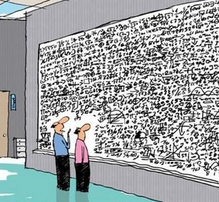

Algoritmo voraz
¿Que es un algoritmo voraz?
En ciencias de la computación, un algoritmo voraz (también conocido como goloso, ávido, devorador o greedy) es una estrategia de búsqueda por la cual se sigue una heurística consistente en elegir la opción óptima en cada paso local con la esperanza de llegar a una solución general óptima. Este esquema algorítmico es el que menos dificultades plantea a la hora de diseñar y comprobar su funcionamiento. Normalmente se aplica a los problemas de optimización.
¿Como funciona los algoritmo voraz?
El funcionamiento de un algoritmo voraz se puede dividir en varios pasos:
- Inicialización: Comienza con una solución parcial inicial.
- Selección de la mejor opción local: En cada paso, elige la opción óptima localmente.
- Actualización de la solución parcial: Incorpora la opción seleccionada a la solución parcial.
- Verificación de la condición de parada: Continúa iterando hasta que se cumple alguna condición de parada.
- Retorno de la solución final: Devuelve la solución obtenida, que puede o no ser óptima.
Ventajas y desventajas
A continuación se mostrarán las ventajas y desventajas de los algoritmos voraces:
Ventajas
Son faciles de implementar
Producen soluciones eficientes
A veces encuentran la solucion optima
Desventajas
No todos los problemas de optimizacion son resolubles con algoritmos voraces
La busqueda de un optimo local no implica encontrar un optimo global
Dificultad de encontrar la funcion de seleccion que garantice la eleccion optima
Tipos de algoritmo voraces
En este apartado mostramos los tipos de algoritmos voraces:
- Algoritmo Moneda
- Algoritmo knapsack problem
- Algoritmo Job Scheduling
- Algoritmo Disjktra
Explora cada uno de estos algoritmos para comprender cómo funcionan y cómo pueden aplicarse a diferentes problemas de optimización.